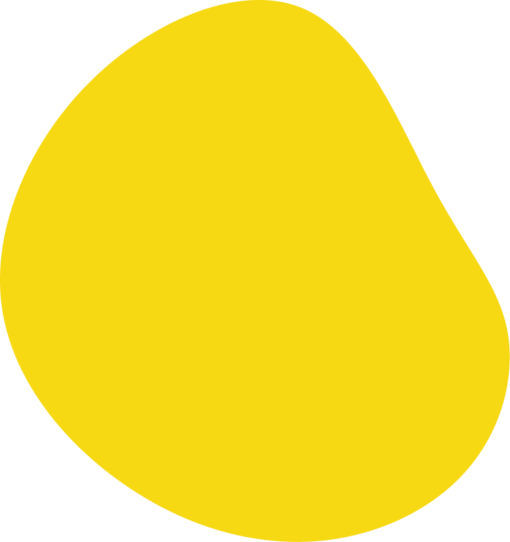
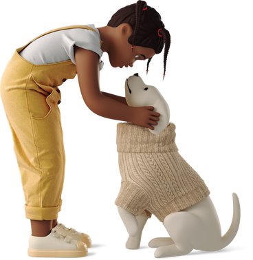

REMCA
Rede de Mobilização pela Causa Animal
Seu assistente virtual para encontrar o pet ideal e tirar dúvidas sobre a ONG.
Como Funciona
- Converse com o bot e diga que deseja adotar um pet.
- Responda algumas perguntas sobre seu perfil e preferências.
- O bot indicará os pets mais adequados.
- Também é possível tirar dúvidas sobre a ONG e como ajudar.
Esse é um projeto desenvolvido pelos estudantes da disciplina Inteligência Artificial da Universidade Católica do Salvador, agradecemos sua participação!